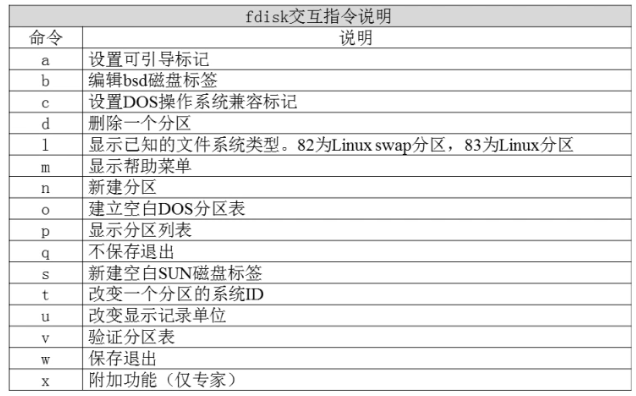

文件系统查看命令df
[root@localhost ~]#df [选项] [挂载点]
选项：
-a 显示所有的文件系统信息，包括特殊文件系统，如/pro，/sysfs
-h 使用习惯单位显示容量，如KB，MB或GB等
-T 显示文件系统类型
-m 以MB为单位显示容量
-k 以KB为单位显示容量。默认就是以KB为单位
统计目录或文件大小命令
[root@localhost ~]#du [选项] [文件或目录名]
选项：
-a 显示每个子文件的磁盘占用量。默认只统计子目录的磁盘占用量
-h 使用习惯单位显示容量，如KB，MB或GB等
-s 统计占用量，而不列出子目录和子文件的占用量
du命令和df命令的区别
df命令是从文件系统考虑的，不光要考虑文件系统占用空间，还要统计被命令和程序占用的空间（最常见的就是文件已经删除，但是程序并没有释放空间）
du命令是面向文件的，只会计算文件或目录占用空间
文件系统修复命令fsck
[root@localhost ~]# fsck [选项] 分区设备文件名
选项：
-a： 不用显示用户提示，自动修复文件系统
-y： 自动修复。和-a作用一致，不过有些文件系统只支持-y
显示磁盘状态命令dumpe2fs
[root@localhost ~]# dumpe2fs 分区设备文件名
1.添加新硬盘
2.查看新硬盘
[root@localhost～]# fdisk -l
3.使用fdisk命令分区
[root@localhost～]# fdisk /dev/sdb

依据提示创建分区，创建完毕，w保存退出。
4.重新读取分区表信息
[root@localhost～]# partprobe
#强制重读所有分区文件，重新挂载分区文件内所有分区。这不是分区必须命令，如果没有提示重启，可以不执行，也可以重启系统。
5.格式化分区
[root@localhost～]# mkfs -t ext4 /dev/sdb1
mkfs命令非常简单易用，不过是不能调整分区的默认参数（比如块大小是4096），这些默认参数除非特殊情况，否则不需要调整，如果想要调整就需要使用mke2fs命令进行重新格式化，命令格式如下：
[root@localhost～]# mke2fs [选项] 分区设备文件名
选项：
-t 文件系统：指定格式化成哪个文件系统，如ext2，ext3，ext4
-b 字节： 指定block块的大小
-i 字节： 指定“字节/inode”的比例，也就是多少个字节分配一个inode建立带有ext3日志功能的文件系统
-L 卷标名： 给文件系统设置卷标名，就不使用了e2label命令设定了
6.建立挂载点并挂载
[root@localhost～]# mkdir /disk1
[root@localhost～]# mount /dev/sdb1 /disk1/
分区自动挂载（将挂载命令写入/etc/fstab中即可完成开机自动挂载）
/etc/fstab
第一字段：分区设备文件名或UUID（硬盘通用唯一识别码）
第二字段：挂载点
第三字段：文件系统名称
第四字段：挂载参数
第五字段：指定分区是否被dump备份，0代表不备份，1代表每天备份，2代表不定期备份
第六字段：指定分区是否被fsck检测，0代表不检测，其他数字代表检测的优先级，那么当然1的优先级比2高
[root@localhost～]# vi /etc/fstab
/dev/sdb1 /disk1 ext4 defalut 1 2
#在fstab文件中加入这行/dev/sdb1就能开机自动挂载
[root@localhost～]# mount -a #依据配置文件/etc/fstab的内容，自动挂载
/etc/fstab文件的修复
提示输入root密码

看到了系统提示符，将/etc/fstab文件修改回来。

没有写权限，只要把/分区重新挂载下，挂载为读写权限，就可以修改了。
[root@localhost～]# mount -o remount,rw / #将根分区挂载成rw权限，这样才能编辑fstab
[root@localhost～]# vim /etc/fstab #编辑fstab
二、parted命令分区
Linux系统中两种常见分区表MBR分区表（主引导记录分区表）和GPT分区表（GUID分区表），其中：
MBR分区表：支持的最大分区是2TB（1TB=1024MB），最多支持4个主分区，或3个主分区和1个扩展分区
GPT分区表：支持最大18EB的分区（1EB=1024PB=1024*1024TB），最多支持128个分区，其中1个系统保留分区，127个用户自定义分区。
parted命令自身分区的时候只能格式化成ext2文件系统，不支持ext3文件系统，那就更不用说ext4文件系统了（截止到CentOS 6.3还是这样，这里只是指不能用parted命令把分区格式化成ext4文件系统，但是parted命令还是可以识别ext4文件系统的）。不过这没有太多影响，因为我们可以先分区后再用mkfs进行格式化。
1）parted交互模式
[root@localhost～]# parted /dev/sdb #给/dev/sdb分区
GNU Parted 2.1
使用 /dev/sdb
Welcome to GNU Parted! Type 'help' to view a list of commands.
使用 /dev/sdb
Welcome to GNU Parted! Type 'help' to view a list of commands.
(parted) #parted的等待输入交互命令的位置
| parted交互命令 | 说 明 |
| check NUMBER | 做一次简单的文件系统检测 |
| cp [FROM-DEVICE] FROM-NUMBER TO-NUMBER | 复制文件系统到另一个分区 |
| help [COMMAND] | 显示所有的命令帮助 |
| mklabel，mklabel LABEL-TYPE | 创建新的磁盘卷标（分区表） |
| mkfs NUMBER FS-TYPE | 在分区上建立文件系统 |
| mkpart PART-TYPE [FS-TYPE] START END | 创建一个分区 |
| mkpartfs PART-TYPE FS-TYPE START END | 创建分区，并建立文件系统 |
| move NUMBER NAME | 移动分区 |
| name NUMBER NAME | 给分区命名 |
| print [devices|free|list,all|NUMBER] | 显示分区表，活动设备，空闲空间，所有分区 |
| quit | 退出 |
| rescue START END | 修复丢失分区 |
| resize NUMBER START END | 修改分区大小 |
| rm NUMBER | 删除分区 |
| select DEVICE | 选择需要编辑的设备 |
| set NUMBER FLAG STATE | 改变分区标记 |
| toggle [NUMBER [FLAG]] | 切换分区表的状态 |
| unit UNIT | 设置默认的单位 |
| Version | 显示版本 |
2）建立分区
1、查看分区
(parted) print
#输入print指令
Model: VMware, VMware Virtual S (scsi) #硬盘参数，是虚拟机
Disk /dev/sdb: 21.5GB #硬盘大小
Sector size (logical/physical): 512B/512B #扇区大小
Partition Table: msdos #分区表类型，就是MBR分区表
Disk /dev/sdb: 21.5GB #硬盘大小
Sector size (logical/physical): 512B/512B #扇区大小
Partition Table: msdos #分区表类型，就是MBR分区表
使用prints可以查看分区表信息，包括硬盘参数，硬盘大小，扇区大小，分区表类型和分区信息。分区信息总共七列，分别是：
Number：分区号
Start: 分区起始位置，这里不再像fdisk用柱面表示，而是使用Byte更加直观
End：分区结束位置
Size：分区大小
Type：分区类型
File system：文件系统类型。
标志：Flags，就是分区的标记
2、修改成GPT分区表
(parted) mklabel gpt
#修改分区表命令
警告: 正在使用 /dev/sdb 上的分区。 #由于/dev/sdb分区已经挂载，所以有警告
#注意如果强制修改，原有分区及数据会消失
忽略/Ignore/放弃/Cancel? ignore #输入Ignore忽略报错
警告: The existing disk label on /dev/sdb will be destroyed and all data on this disk will be lost. Do you want to continue?
是/Yes/否/No? yes #输入yes
警告: WARNING: the kernel failed to re-read the partition table on /dev/sdb (设备或资源忙). As a result, it may not reflect all of your changes until after reboot. #下次重启后，才能生效
忽略/Ignore/放弃/Cancel? ignore #输入Ignore忽略报错
警告: The existing disk label on /dev/sdb will be destroyed and all data on this disk will be lost. Do you want to continue?
是/Yes/否/No? yes #输入yes
警告: WARNING: the kernel failed to re-read the partition table on /dev/sdb (设备或资源忙). As a result, it may not reflect all of your changes until after reboot. #下次重启后，才能生效
(parted) print #查看分区表
Model: VMware, VMware Virtual S (scsi)
Disk /dev/sdb: 21.5GB
Sector size (logical/physical): 512B/512B
Partition Table: gpt #分区表已经变成了gpt
Number Start End Size File system Name 标志 #所有的分区都消失
Model: VMware, VMware Virtual S (scsi)
Disk /dev/sdb: 21.5GB
Sector size (logical/physical): 512B/512B
Partition Table: gpt #分区表已经变成了gpt
Number Start End Size File system Name 标志 #所有的分区都消失
修改了分区表，如果这块硬盘已经有分区了，那么原有的分区和分区中的数据都会消失，而且需要重启系统才会生效。
注意：一定要把/etc/fstab文件中和原有分区的内容删除掉，才能重启动。要不系统启动就一定会报错。
3、建立分区
因为修改过分区表，所以/dev/sdb中的所有数据都消失了，所以可以重新对这块硬盘分区。不过建立分区时，默认文件系统就只能建立成ext2。命令如下：
(parted) mkpart
#输入创建分区的命令，后面不要参数，全部靠交互指定
分区名称？ []? disk1 #分区名称，起名叫disk1
文件系统类型？ [ext2]? #文件系统类型，直接回车，使用默认ext2
起始点？ 1MB #分区从1MB开始
结束点？ 5GB #分区到5GB结束
#分区完成
(parted) print
Model: VMware, VMware Virtual S (scsi)
Disk /dev/sdb: 21.5GB
Sector size (logical/physical): 512B/512B
Partition Table: gpt
Disk /dev/sdb: 21.5GB
Sector size (logical/physical): 512B/512B
Partition Table: gpt
Number Start End Size system Name 标志
1 1049KB 5000MB 4999MB disk1 #分区1已经出现
注意，现在查看的分区，查看MBR分区表的分区时有一些不一样，少了Type这个字段，也就是分区类型的字段， 多了Name分区名字段。分区类型是标识主分区、扩展分区和逻辑分区，不过这种标识在MBR分区表中使用，现在已经变成了GPT分区表了，所以就不再有Type类型了。也就是说主分区，扩展分区和逻辑分区的概念不再有用。
4、建立文件系统
(parted) mkfs
#格式化命令（这个mkfs只是parted的交互命令）
如果要格式化成ext4文件系统，要用mkfs命令（注意这个mkfs不是parted交互命令中的mkfs，而是系统命令）
5、调整分区大小
parted命令还有一大优势，就是可以调整分区的大小（windows中也中可以实现，不过需要转换成动态磁盘或者用第三方工具）。起始Linux中LVM和RAID是可以支持分区调整的。
注意：parted调整已经挂载使用的分区时，是不会影响分区中的数据的，也就是说数据不会丢失。但是一定要先卸载分区，再调整分区大小，否则数据是会出现问题的。还有要调整分区大小的分区必须是已经建立了文件系统（格式化），否则会报错。
命令如下：
(parted) resize
分区编号?1 #指定要修改的分区编号
起始点？ [1049kB]？ 1MB #分区起始位置
结束点？ [5000MB]？ 6GB #分区结束位置
6、删除分区
(parted) rm
分区编号?1 #指定分区号
注意：parted中所有的操作都是立即生效，没有保存生效的概念。
七、分配swap分区
1、分区，并修改为swap分区ID
[root@localhost～]# fdisk /dev/sdb
Command (m for help): t #修改分区系统ID
Selected partition 1 #选择分区
Hex code (type L to list codes): 82 #改为swap的ID
Changed system type of partition 1 to 82 (Linux swap / Solaris)
2、格式化
[root@localhost～]# mkswap /dev/sdb1
3、使用swap分区
使用swap分区之前，先用free命令查看内存
[root@localhost～]# free
[root@localhost～]# swapon 分区设备文件名 #挂载swap分区
[root@localhost～]# swapoff 分区设备文件名 #卸载swap分区
让swap分区开机之后自动挂载需要修改/etc/fstab文件
[root@localhost～]# vi /etc/fstab
/dev/sdb1 swap swap defaults 0 0
#加入新swap分区的相关内容，这时用的是分区的设备文件名，也可以使用UUID号。